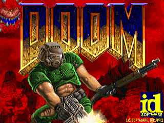

Introduccion
Doom (oficialmente escrito DOOM, y ocasionalmente DooM por los fans, basado en el estilo de las letras del logo de Doom) es un videojuego FPS (First Person Shooter o disparos en primera persona) creado por Id Software en 1993. El Doom original funcionaba bajo el sistema operativo DOS.
Desde su debut, se han vendido más de 10 millones de copias de videojuegos de la serie Doom. Desde el lanzamiento de Doom en 1993, la serie ha generado numerosas secuelas, paquetes de expansión y 2 películas, además de miles de mods creados por la comunidad de fans.
El juego consiste en personificar a un marine espacial que se encuentra de rutina en una estación en Phobos , una de las lunas de Marte . En un segundo, las puertas del Infierno quedan abiertas, dejando libres a un sinnúmero de demonios, espíritus inmundos, zombis, que infestan la base en cuestión de horas. Eres el único ser humano superviviente en la estación y tu misión es ir logrando pasar con vida de nivel en nivel
Desarrollado por : id Software
Publicado por : id Software, GT Interactive, Activision
Lanzamiento : 10 de diciembre de 1993
Plataforma/s : DOS, Mac, Linux, Windows, Atari Jaguar, PlayStation, SNES, Sega32X, Sega Saturn, Xbox, Xbox 360
Motor: id Tech 1
Género : FPS
Historia
Eres un marine, de los más fuertes y entrenados de la Tierra, experimentado en combate y listo para la acción. Hace 3 años golpeaste a un oficial superior por ordenar a sus soldados que dispararan contra un grupo de manifestantes civiles. Considerándote como peligroso, decidieron trasladarte a la base en Marte, sector espacial de la UAC (Union Aerospace Corporation).
Leer másEpisodios
Knee-Deep in the Dead es el primer episodio de Doom / The Ultimate Doom y el único episodio en la versión shareware. El episodio tiene lugar en las instalaciones UAC de Phobos, una de las lunas de Marte.
Diseñado principalmente por John Romero, los niveles tienen un estilo gráfico único caracterizado por el uso extensivo de las texturas STAR, grandes cantidades de colores marrón y verde saturados, en general, y un brumoso horizonte de montañas.
Debido a su inclusión en la versión shareware de Doom, los estilos de niveles del episodio 1 se han convertido en uno de los temas más populares y fácilmente reconocibles de "diseño Doom". Los niveles hechos por fans que utilizan exclusivamente las texturas del Episodio 1, y muchas veces emulando el estilo de juego del Episodio 1, se conocen comúnmente como niveles Estilo E1 o TechBase.
Con sus compañeros marines muertos o poseídos, el protagonista debe luchar en su camino a través de los diferentes edificios de UAC, cada uno invadido por demonios y zombis. Finalmente, llega a la anomalía (el portal de entrada interdimensional entre Fobos y Deimos) y derrota a los poderosos barones que la custodian. Por desgracia, el único lugar para ir después es a través de la puerta de entrada a Deimos, que está aún más fuertemente controlada por las fuerzas del infierno .
The Shores of Hell es el segundo episodio de Doom / The Ultimate Doom. Todos los mapas de este episodio fueron realizados por Sandy Petersen, aunque muchos de ellos fueron comenzados por Tom Hall. El episodio se desarrolla en Deimos, que está siendo invadido e infestado por las fuerzas demoníacas. Para mostrar esto, sus niveles generalmente se parecen a instalaciones UAC que han sido parcialmente alteradas por los invasores demoníacos. El cielo que se utiliza para el fondo se compone de montañas contra nubes rojas.
Los nombres de nivel sugieren que sólo cuatro edificios (niveles 2 a 5) son UAC incorporados, y que los otros son nuevos edificios infernales (a estrenar, en el caso de la Torre de Babel).
Inferno es el tercer episodio de Doom / The Ultimate Doom. Todos los niveles en este episodio se acreditan generalmente a Sandy Petersen, aunque Tom Hall comenzó originalmente dos de ellos.
Este episodio se desarrolla en el infierno, posiblemente la región interna del Infierno.
El nombre del episodio es al parecer una referencia a la obra de Dante Alighieri La Divina Comedia.
La mayoría de estos niveles tienen una habitación principal, centro que se puede identificar fácilmente, por lo general circular o cuadrada.
Linea de Tiempo
2018 - El mayor proveedor militar, la Union Aerospace Corporation (UAC), ha utilizado las instalaciones remotas en Phobos y Deimos para llevar a cabo varios proyectos secretos, incluida la investigación sobre viajes espaciales interdimensionales.
2019 - El protagonista golpea a un oficial superior y es transferido a Marte, hogar de la UAC.
2021 - 1 de julio - Se publica DOOMNL 01-D19305-1C, el Manual de la Marina Espacial de los Estados
2022 -
15 de marzo: Marte recibe un mensaje de la base de Phobos que indica que la base está bajo ataque y solicita respaldo.
Unas horas más tarde, los marines desembarcan e intentan detener la invasión. Se ordena al protagonista que se quede atrás y proteja el perímetro. Las fuerzas militares son aniquiladas o convertidas en monstruos. Las autoridades planetarias envían al Marine sobreviviente el nuevo DOOMNL 01-D19505-1D que reemplaza el manual anterior (ahora incluye información para el Marine e imágenes de la invasión tomadas por cámaras de video remotas. Los datos de video fueron analizados por computadora de la UAC y se proporcionan los resultados "aquí y solo aquí"). El marine abandona la cápsula de escape prometiendo derribar la mayor cantidad de fuerza de invasión posible antes de su muerte.
Curiosidades
1.- El tamaño original:
Llegó en el extinto formato disquete, más concretamente en la variable de 3½, que podía albergar en su interior hasta 1,44 MB de datos y necesitó de cuatro unidades para contener todos los archivos del juego.
2.- ¿Y ese nombre? :
Traducido directamente desde el inglés, Doom significa condena o sentencia, un título que ya le va demasiado bien para ejemplificar la irrupción de los demonios y demás horrores a los que teníamos que enfrentarnos. Sin embargo, la inspiración original era el palo de billar de Tom Cruise en la película El Color del dinero (1986) de Martin Scorsese.